munni — user guide
How to use the app, screen by screen. ← back to the app
Getting started
munni is local-first: everything lives on your device and works offline; signing in adds sync between your devices. Try the demo from the login screen — it resets itself on sign-out — or create an offline profile that never touches the network; a device can hold several offline profiles, each a fully separate world (spaces inside one profile are the way to split bookkeeping — Mina double-checks before you mint a second world). Right after the first-run setup, Mina — munni's assistant — walks you through spaces, accounts and your first transaction on the real screens; everything the tour makes can be undone at the end.
- Install munni as an app (Help → Install as app): you get a clean full screen and your data is protected from browser cleanups.
- Replay the Mina tutorial any time from Help — it fast-forwards past what already exists.
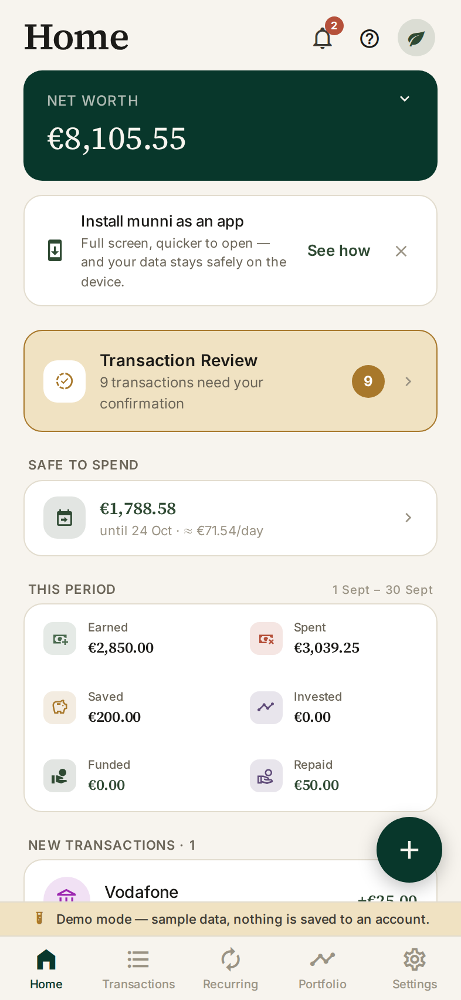
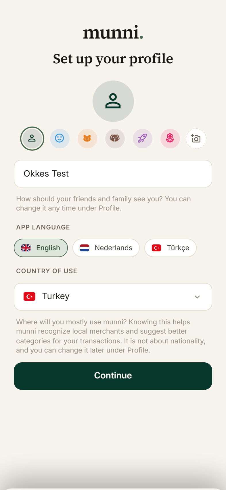
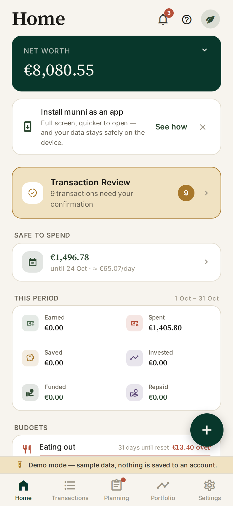
Home is yours
Home is a landing zone of blocks: review queue, this period, new transactions, budgets, upcoming costs and more. Features you haven't tried yet gather in one compact Explore block instead of filling the page — tap a row to start; each disappears once it's in use, and Explore is a block like any other, so Customize Home orders or hides it too. Reorder or hide blocks with Customize Home at the bottom. The avatar on the top right switches spaces. The floating + button is the quick-add door: a manual transaction, a bank-export upload, a new category, account, friend request or space — in one tap.
- The balance band folds out to show every account — and you pick what the big number MEANS per space: net worth, total cash and safe to spend are premade formulas, and "Picked accounts" is the one you compose yourself, checkbox by checkbox. On a wide screen Home splits into two columns only once there are enough blocks to fill them.
- Portfolio has its own tab at the bottom.
- The bell has two tabs now: Notifications collects release news, due reminders, the interest-rate nudge and the weekly digest (a numbered badge counts what you haven’t seen — opening the tab clears it), and Activity keeps the space’s audit trail with who did what.
- The space switcher tells you what each space would ask of you — a “N to review” pill and a red dot for a busted budget — and the avatar wears a dot whenever another space needs attention.
- Pick a display currency on your profile to read every amount in one currency, marked ≈ — your data keeps its own.

Connecting your bank
Settings → Global settings → All accounts. Connect a bank — the door leads to Settings → Connections, where GoCardless and Enable Banking list the banks (read-only PSD2 access — munni can never move money): pick the country and the bank, give permission on the bank's own page and land back in munni with the connection named — or import statements: pick your bank from the searchable list (ASN, ING, PayPal — or the universal CAMT.053 door for any other), several files at once, with a live transaction count while a big import runs for accounts your bank won't share; those are global, listed first. Manual cash/savings accounts live INSIDE a space — the overview lists them under their space, and creating one takes you to "This space's accounts" (the wallet icon; the bank icon is the global overview). Bank data lands once per account; each space picks its accounts with a start date AND decides what the account is to that space — checking, savings, a loan… or a funding account: a shared pot you send money to, whose transactions never show in the space and whose balance counts toward nothing. Connected and imported accounts both land global — nothing joins a space by itself: the result offers the attach step directly, with the account already picked, where you choose the account type and how far back its history shows. Attaching into a shared space first reminds you that its members will see the account.
- Every space is born with six default accounts — savings, loan, investments, bank, cash and a shared pot. They are munni\u2019s own fixtures: a movement category always has somewhere valid to point, so they can\u2019t be deleted. You CAN adjust their balance from the account editor — the correction is recorded as an adjustment row, so the ledger stays honest. Their transactions are managed by munni: the legs appear when you link, leave when you unlink, and never take hand-edits.
- New transactions arrive automatically several times a day.
- The overview stays quiet: each space is its own collapsed card now — tap its head (icon + name) to open it — with your own accounts inside, the six defaults folded behind one more toggle, and bank-fed accounts echoed inertly — tapping an echo jumps to the real row up top. The account editor is grouped (basics, balance, loan story, about) and the info sheets say how fresh the data is: the date it runs through and the newest transaction.
- GoCardless and Enable Banking are two parties in the Connections catalogue: GoCardless works with any bank, Enable Banking only with accounts linked upfront on its portal \u2014 pick the one your bank was set up for. Each connection remembers its party, the bank is searched by name with its logo, and that logo rides the account row afterwards.
- Reserved (not yet booked) card payments show with a badge and disappear when the real booking lands.
- Each account row shows when the bank last answered — a Reconnect hint appears when a consent has gone quiet.
- Imported accounts warn when their data has gone stale: an export from weeks ago imports fine but silently misses everything after it — the preview and the account row both tell you where the data ends.
- Connected the bank after importing statements? munni offers a reconcile pass: the bank is the truth, your edits move over, and you review every mismatched row before it is removed.
- The upload sheet knows the tested banks by their logos and carries each bank’s own download instructions (ING’s semicolon CSV included), and picking one bank but uploading another’s file asks before importing the mismatch.
- Editing ANY manual account’s balance records the difference as an adjustment transaction, and the editor names the delta before you save. The manual form’s Adjustment checkbox shows the balance impact live and the typed number can mean the transaction’s value OR the balance to land on; the category locks to Balance Adjustment while recurring and counterparty stand down.
- The import preview takes PICKS now: a multi-account file (or several pooled files) offers a checkbox per account, and big imports say about how long is left while they run.
- Each upload is a batch on the account sheet — see who uploaded what, and roll a bad upload back out.
- In a shared space, connecting or importing asks a conscious yes first — bank data becomes visible to every member; manual accounts stay quiet.
- Two people connecting the SAME bank account both own it fully — the account number proves it is the same one. Each keeps their own bank consent, either can rename, attach or delete their view, and when one disconnects, the other\u2019s consent quietly takes over the fetching. An account shared with you lives INSIDE the space it was shared into — its row wears a "Shared" badge, taps open a read-only info sheet (type, balance, freshness, who shared it), and the owner’s icon shows on your side too.
- An account whose bank answered with zero transactions on the last sync says so right on its row — "synced fine" and "synced empty" are different facts.
- A transfer can create its counterparty on the spot through the one Create door: bank connect, statement import or a manual account — bank-connected and imported accounts both land global and join the space through the explicit attach step, where you pick the type and the history start.
- A loan IS an account now: create it once (loan, mortgage or credit card) and it appears on the Debts screen by itself — transfers to it are the payments, and munni nudges weekly until the interest rate is filled in (0% counts). The plan takes a due day like a recurring cost, and "Left to pay" is the loan\u2019s anchor value. Credit cards join the debts view only when you give them a debt story or flip "Track as debt" on the account.
- Leave a loan’s payment fields empty and the plan — amount, rhythm, payoff date — is estimated from the payments themselves; debt payments without a counter account gather under “Unassigned payments” until you file them.
- A recurring cost owns a category: linked transactions file under it automatically, with expected reimbursement as the one allowed override.
- Recurring-cost detection reads your full bank history — charges older than the space’s start date count as pattern evidence (that’s how yearly subscriptions get spotted) while your lists stay clean; accepting a suggestion opens the occurrence review: the reconciler’s own picks arrive pre-checked, you prune what does not belong, and the linked charges take the recurring’s category on the spot.
- Detection knows lenders too: a payment pattern to a known one (DUO, for a start) surfaces right on the Debts screen — "Track as loan" opens loan creation in place, prefilled with the pattern as the payment plan, and "Not a loan" dismisses it; the recurring inbox keeps only genuine subscriptions.
- An account’s TYPE is a space-level fact: each space decides what an attached account is when attaching it, names it on the space’s account list, and can change it later from the account’s info sheet — deliberately destructive: that space’s transactions return to review under the new reading, as if freshly added, while other spaces’ readings and all balances stand. Space-created accounts carry their own type; the global overview keeps accounts plain.
- A space can call an attached account by its OWN name — rename it in the space\u2019s accounts sheet without touching the global name (shown right there as its own fact, with a quick link that opens the account in the all-accounts overview); renaming globally asks whether the space names follow.
- Banks without an open-banking feed connect through munni\u2019s own platform under Settings \u2192 Connections (ING with the app\u2019s approval, ASN on its own page streamed to you): the accounts the bank hands over appear under the party\u2019s card, each with an Attach button that lands here with the account already picked. They read "Fetched by munni from \u2026" on their sheet and get the same synced-empty fact and reconnect hint as an open-banking account.
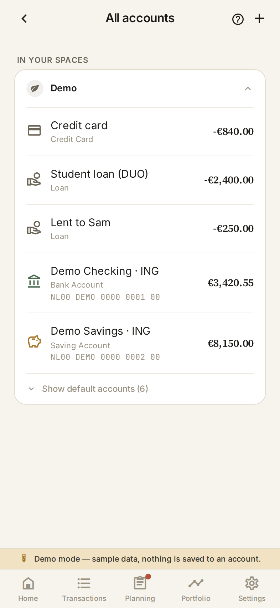
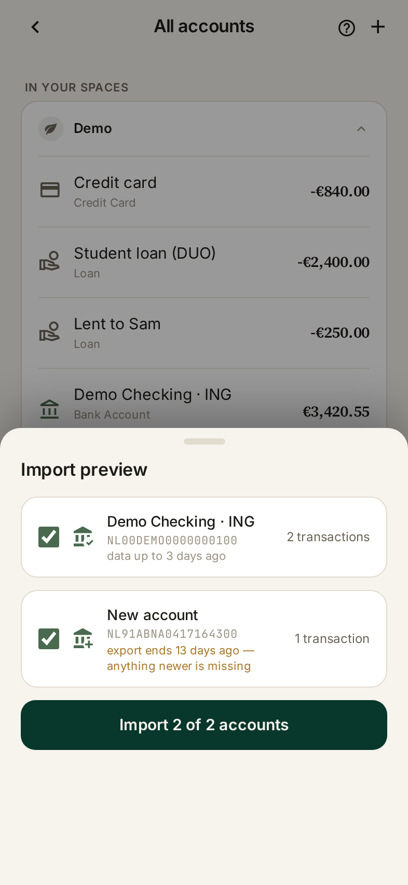
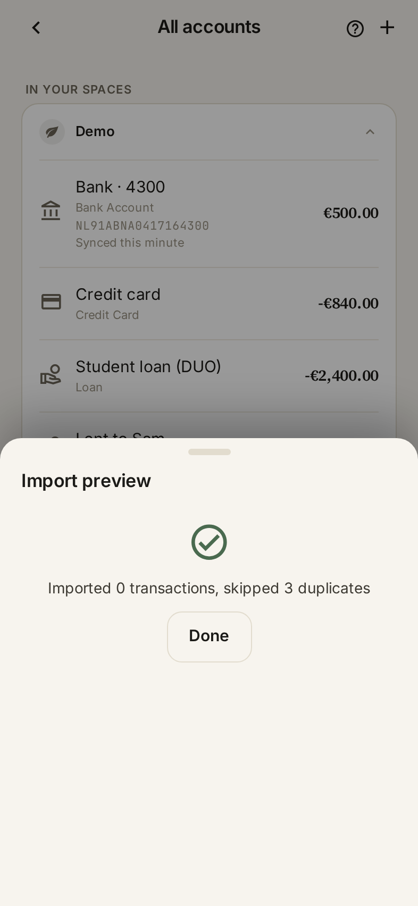
Reviewing transactions
The review deck shows one transaction at a time with a suggested category and the reason behind it — long titles wrap in full, nothing is cut off. The Split transaction row leads the card now (first question: one story or several?), the recurring and event rows appear once a category stands, and "Also apply to similar" starts at select-all on every card and catches the rest of the same merchant in one go. Everything you change — category, counterparty, splits — stays a draft until you hit Confirm.
- Tap the description to read the full bank text.
- Splitting the transaction is the FIRST row on the card: decide one story or several before filing anything — for a single story just keep going with the category below.
- Skip is honest: it leaves no trace and the card returns later.
- Categories carry the meaning: a plain category files the money by its sign, and the marked ◆ special categories tell the special stories — Set aside, a loan payment, a transfer, money to the shared funding pot. Picking one asks the counterparty on the spot — or go counterparty-FIRST from the card\u2019s own Counterparty row: name the account and the special category fills itself (once you deliberately file a PLAIN category, that row bows out — it only shows where a counter account means something). The category picker can also filter BY counter account: pick the account the money went to, only categories that can point at it remain, and your pick suggests that account in the ask. The ask pins the space\u2019s default account on top with one tap — every family has one now, cash withdrawals included — or a real account. Walk away from the ask and Confirm settles the row onto the default by itself — except plain Transfer: a transfer munni predicts must name a REAL account, so it reads the bank text for one of yours (your PayPal, a distinctively named pot) and pre-links it; with no such clue the card opens Uncategorized instead, and the transfer’s default bank account stays a deliberate pick inside the ask. The lists agree with each other: only categories that fit the account and the money\u2019s direction are offered, and the ask lists only accounts that category can mean — Set aside points at savings accounts, plain Transfer at regular ones. With a counterparty already picked the categories narrow to what IT can mean (a credit card: transfer or a debt payment) — and "Remove counterparty" inside the ask resets the category and frees the choice again.
- On a savings, loan or investment account the story is locked: the account itself types every one of its rows, and the sign reads the direction (+ on a loan = repaid).
- Splitting CATEGORIES is not splitting the transaction: the category chip spreads one payment across several categories — exact euros or percentages — and the row stays ONE transaction, listed once with a thin color bar. A spread holds regular categories (and reimbursements): a ◆ special category spans the whole transaction — one special, one counterparty per transaction — so mixing €60 groceries with €40 Set aside means splitting the TRANSACTION, where each part carries its own counterparty.
- The Split transaction row is the other gear: the amounts partition into parts that stack like cards in a deck; tap a peeking card and it shuffles to the front to take its categories, counterparty, recurring cost and event right there.
- Parts are full transactions and nothing restricts them beyond the amounts adding up — five expense parts, two savings, any mix is a real split. Splitting a filled transaction asks first: the row becomes a pure container and its own category, recurring link, event and note reset — the parts carry those from then on. Confirm stays tappable while parts are incomplete; tapping it marks exactly which parts still need a category.
- Missing a category, recurring cost or event? Create it right from the picker — the card keeps your place.
- Naming a counterparty is ONE tap — and the card (and each split part) then carries its own Counter-transaction row: by default the leg is created on confirm (manual counterparties) or arrives with the bank feed. Tap the row to point at an existing transaction instead — one to three suggested matches first, every other open row scrollable below, searchable by title or amount; and when the real counter has not arrived yet, "link and wait" holds the link open for the feed. Creating keeps the "apply to similar" offer armed, and so does picking an existing row now: Confirm walks each selected sibling through its own match sheet, named per transaction, to pick its own counter or link and wait.
- The card remembers more than categories now: a percentage spread you keep confirming for a merchant arrives pre-staged, and the event its recent charges joined is offered on the event row — until you touch it yourself.
- A loan counterparty needs no extra line: the Counterparty row IS the debt (they are one and the same account).
- Split parts carry the full linking mechanism too: a part’s counterparty ask offers pick-existing, and its own Counter-transaction row wears the picked leg’s face or the honest waiting state.
- Suggested categories confirm right away: a card whose split or spread already stands never asks you to "pick a category first". And "Reimbursed" is never a suggestion — that category only ever comes from an actual reimbursement link.
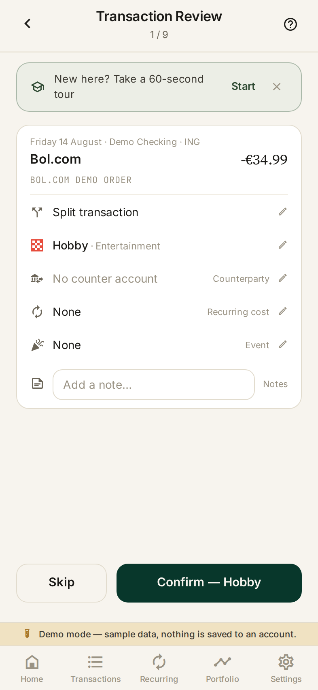
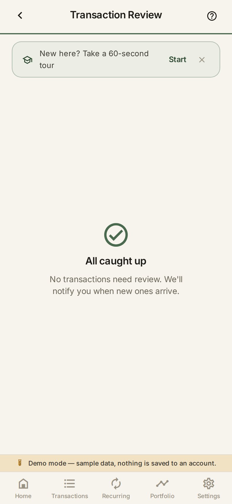
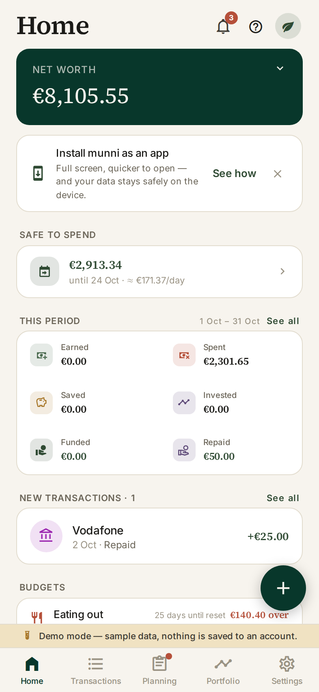
Transaction details
Open any transaction to recategorize, split it, or set its counterparty — one per transaction, a property row of its own next to the account (a manual counterpart gets its own leg written automatically, and removing the counterparty resets the category); the bank's raw counterparty stays as a read-only "Original counterparty" fact under Details, and on manual rows a small Adjustment toggle marks corrections. Attach receipts, link recurring costs or events, and record reimbursements that show the net cost — on a split transaction the reimbursement stays ON the part: the part's headline shows what it is worth, the whole stays split, and only the parent's total moves along. Splitting has two gears — and they are different features. SPLIT CATEGORIES is the light one: the category editor spreads one payment across several regular categories, exact euros or percentages, and the row stays ONE transaction with everything a transaction has. A ◆ special category is different: it spans the whole transaction — one special, one counterparty — so it never shares a spread. SPLIT TRANSACTION is the heavy one — when one payment carries several kinds of money: each part has its own name ("Albert Heijn – split 1", rename freely), its own counterparty on its own row, even its own category spread — the €100 phone bill can be €50 telecom and €50 paying the device loan off, and the loan moves by exactly its €50; the container itself keeps no category at all. Settled value moves into the special Reimbursed category — real categories keep only what you truly paid; it stands pinned first in the category editor, read-only, and removing the reimbursement link is the only way to remove it — and the transactions tab has an "Unsettled reimbursements" quick filter for everything still waiting on money.
- One reading rule in the detail: a pencil edits right here, a chevron travels somewhere. The Actions card leads with Split transaction, then the recurring and event links — and "Customize this view" can reorder or hide the actions and details sections too now.
- The "Show linked separately" chip keeps the FULL list and uncollapses every pair, both legs standing on their own. The New chip shows what you saw for the first time in the last 24 hours — signed in, it is ONE clock across your devices (what the desktop saw yesterday is not new on the phone today; offline profiles keep a per-device clock), and looking at them does not clear it; the day does — Home\u2019s "see all" arrives with it on — and your filters survive a detour into a transaction, resetting only on a tab switch or a fresh start.
- Search matches amounts too: typing 10 finds 10.99 and 210.15 — and part names, so "Sarah\u2019s loan" finds the payment that carries it; every hit lights up in the row, the amount included.
- A split shows its sub-transactions as rows of their own in the list, branching off a compact header that names the original payment with its full amount — the chevron folds them away; each row opens as its own page with its own type, categories, event, note and reimbursements, its sisters one tap away, and the whole transaction one more.
- Filters see through splits: when a category or type filter matches only some parts, exactly those parts show — aligned like any other row, wearing a small split mark — in the list and in the overview drill-downs alike — and a drill row opens the transaction directly; back returns you to the drill.
- Amount fields in the split editor do math: type 87,40-25 and leave the field.
- Amount fields also type like a register: 5 means 0,05, then 55 is 0,55, then 550 is 5,50 — or type the comma yourself, both work.
- Labeling a row "Loan payment" asks where it went: the space\u2019s default loan account with one tap, or a real loan \u2014 and a manual account ALWAYS asks first — point at the row that is already there, or explicitly create the other leg; nothing is written silently. Unlinking later asks what happens to a leg munni generated (keep it as an ordinary transaction, or remove it with its balance effect), and unlinking from a default account warns that it resets the category and counterparty. Money parked on a default stays movable: a real loan\u2019s "Found these payments" offers default-linked rows too, and relinking moves the leg over.
- The default accounts\u2019 own rows are read-only \u2014 munni writes them when you link and removes them when you unlink; manage the story from the origin transaction, or adjust the default\u2019s balance from the account editor.
- A transfer between two of your accounts shows as ONE row ("Checking → Savings"); filtering by account brings each leg back. Wallet feeds (PayPal-style) often show BOTH halves of one purchase as payments — point the bank debit at the wallet purchase (the Awaiting-counterpart door offers the matching rows) and the pair collapses to the purchase, categorized and counted once, wearing where the money came from. The Counterpart-transaction row wears the other leg\u2019s face — who, when, on which account, for how much — and tapping it jumps straight there; a row already spoken for by another pairing is never offered again. Reimbursement rows jump straight to their linked transaction too — no sheet in between, on split parts included.
- Recategorizing offers a bulk apply — tap the bar to pick exactly which transactions it touches. Splitting offers the same: the split lands on the picked same-name rows, resized to each amount.
- Rename a transaction via the pencil — munni remembers and auto-renames future arrivals; the bank original stays under Details.
- Linking a reimbursement opens its own screen: search by name or amount, or take the suggestion — munni spots likely matches by timing, wording and size. The amount sheet names the picked row’s date and previews the category impact on BOTH sides before you save.
- On a split, a reimbursement linked from the whole settles the part still EXPECTING it first, then an uncategorized one, then the largest — the expected-reimbursement slice is what shrinks, not your biggest category.
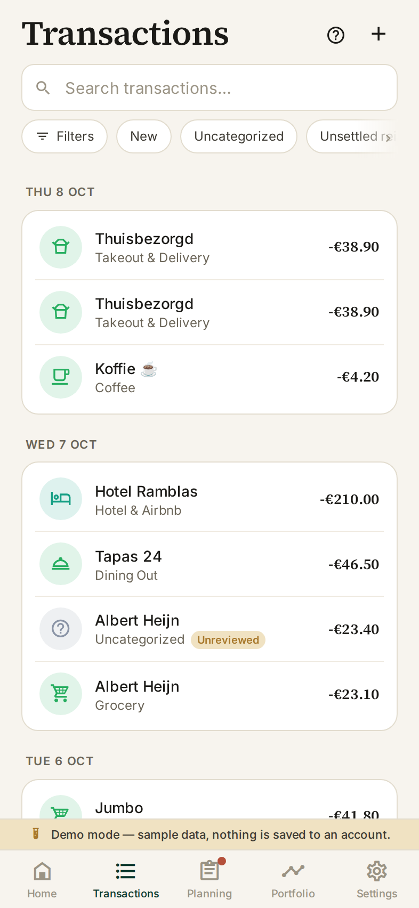
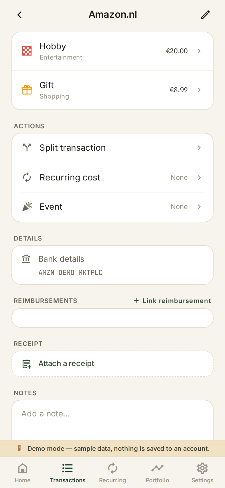
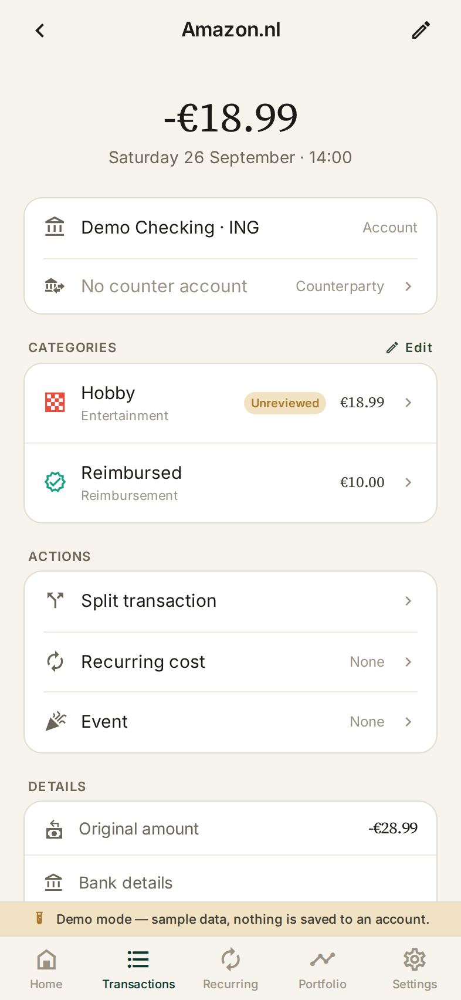
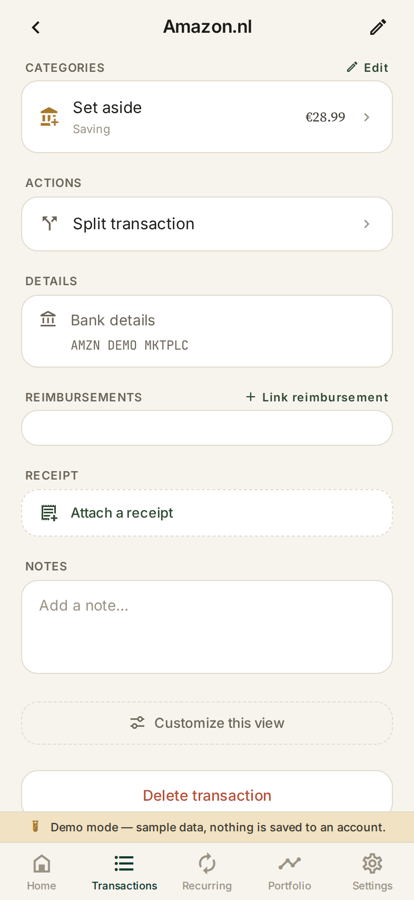
Spaces & sharing
Spaces are separate bookkeeping areas — personal, household, a trip. Creating one is a full form now: name, icon and color, budget period, ledger currency and history start, all prefilled with sensible defaults so "type a name, press Create" still works. Invite friends into a shared space: everyone sees the same transactions but each space keeps its own categories and budgets. Attach a bank account to any number of spaces, each with its own history start. The card at the top of the Settings tab opens the space's own settings (name, image, color); its budget period, currency and default history start are separate settings right below it.
- Creating a space asks the privacy choice right there (private by default). A space picture takes over from symbol and color while it is set — the symbol grid and the swatches visibly go to sleep (faded, grey glyphs) until you remove it — and the palette button on a space edits exactly that: its look. The icon grid searches the FULL icon set (like categories) and repaints live in the picked color — and the create form takes a picture or webcam photo too, not just settings.
- Members are managed through ONE door now: pick a friend with a role, or send a friend request (role included) right in the same sheet; pending invitations show the role they carry and can be cancelled; removing a member AND leaving the space both count down five seconds like every destructive action; your own row reads "Me", marked by the account, never by the name.
- New spaces start locked private — nobody can be invited until the owner flips the private-mode row in the Settings tab\u2019s setup group (the space\u2019s identity screen keeps only name, image and color).
- Roles: owners manage members, contributors edit, readers only look. Inviting an existing friend opens a searchable sheet where you pick the role up front; inviting someone NEW from the members screen sends one request that adds them to the space the moment they accept. Tap a member to see their full identity, role and member-since date — role changes and removals reach the affected person as a phone notification, and being removed from the space you are looking at switches you to another with a clear note.
- Leaving a space archives your attached accounts for the others instead of deleting history.
- Moving the history start counts its consequences before anything happens: bank rows hide but stay stored, manual rows before the date are deleted with a warning, and moving it older surfaces stored rows again. Manual transactions dated before the start are refused with a one-tap "move the start here" way out.
- The budget period screen has its own tutorial — tap the ? up top.
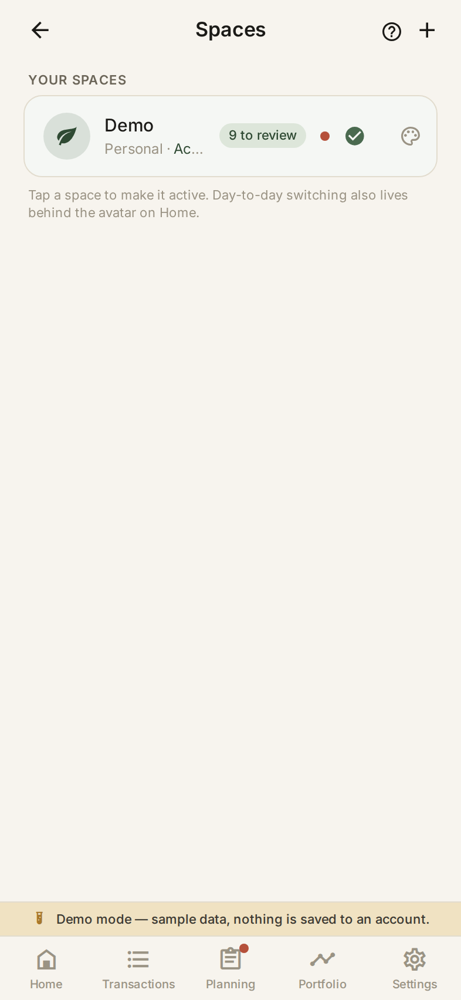
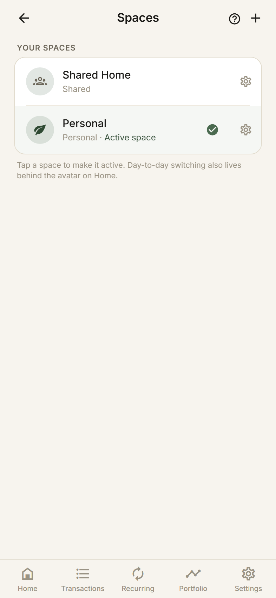
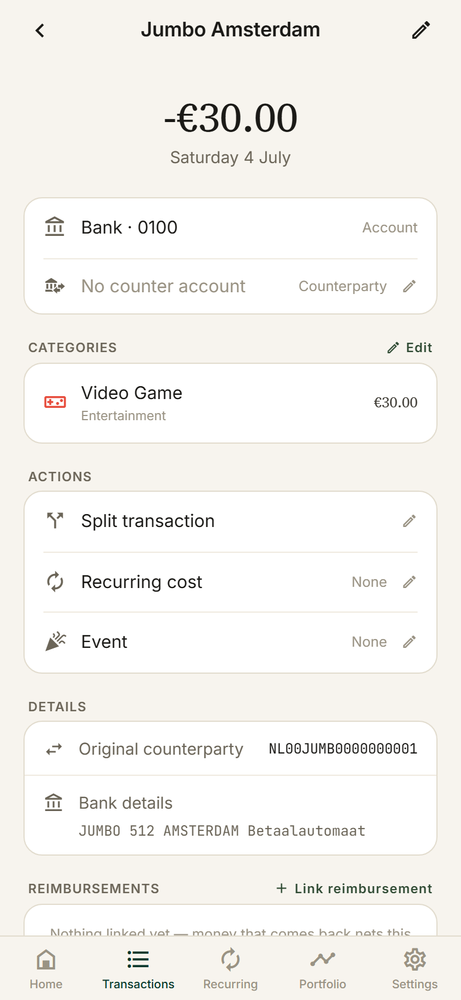
Splits — settle up with any group
Settings → Splits creates a shared tab for a trip or a night out. Add who paid what — typed in, or picked straight from your own transactions — and the ledger works out who owes whom with the fewest possible transfers. Adjust shares when a split isn't fifty-fifty; shares are locked in when an expense is added, so people joining later never rewrite history. Splits need a connection and a signed-in account.
- Invite anyone with one share link — no friendship needed; joiners pick which of their own spaces the split attaches to.
- Link a split to one of your events: searched-in expenses join the event automatically, and the event page shows who owes whom.
- Members of a split see only the split — never your spaces, accounts or transactions.
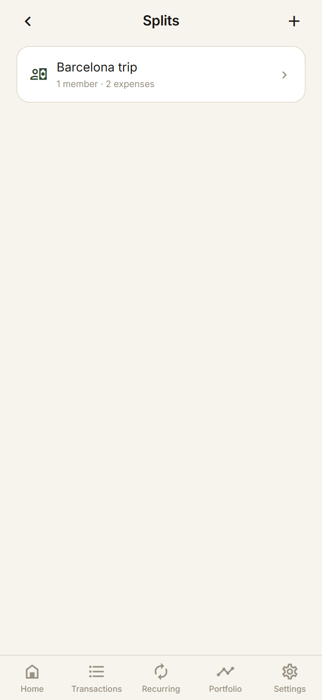
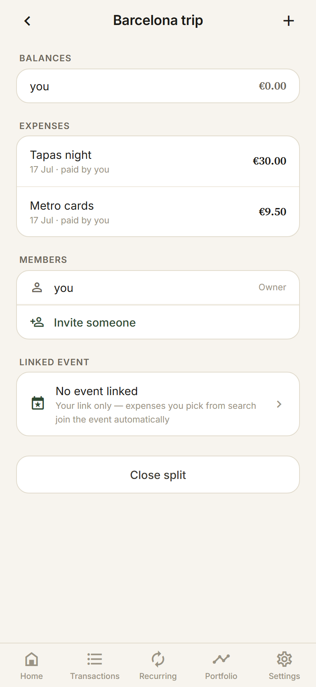
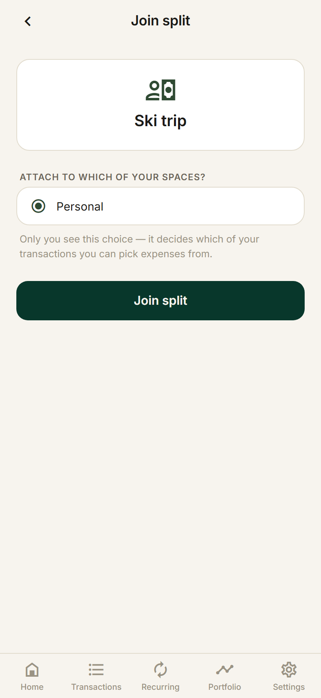
Categories & budgets
The built-in catalog covers most spending; create your own main or sub categories when it doesn't. Budgets track a limit per category per period, and the overview drills from totals into categories into transactions. Earned and Spent add up: each total is exactly the sum of the groups it lists — expected and received reimbursements sit under their own Reimbursement group, the settled part of a reimbursed cost stays out on both sides — and coming back from a category leaves the group open and the list where you left it.
- The category search rides along, moving 1:1 with your finger — a little downward scroll hides a little of it, upward travel reveals it again, as if it were list content; the ◆ chip filters to the special categories.
- munni learns from you: confirm a merchant twice and it skips review next time. Every confirmation votes with a recency-weighted say — one dinner out never beats years of groceries, while a habit that truly shifts takes the lead after a few repeats — and the space\u2019s OWN history always answers before your other spaces do.
- Can’t find a category while reviewing? The picker offers "create your own" right there.
- Direction is no longer a question: a subcategory simply follows its parent\u2019s nature. A NEW parent category always tracks spending — income lives under the special ◆ Income category, the one special parent open to your own subcategories.
- Investment tells five stories now: Invested and Withdrawn move money between your accounts and the brokerage, while Bought, Sold and Fees (plus Dividends) live on the brokerage\u2019s own ledger. Debt on a regular account is just Repaid or Borrowed — Interest charged and Fees exist only on the loan\u2019s own ledger.
- A credit card is a regular account too: its rows can take the debt story (Repaid, Borrowed, Interest, Fees) AND transfers or any ordinary category. An account attached as a loan keeps the loan ledger’s narrowed list — change its type in the space’s accounts sheet to read it as a card.
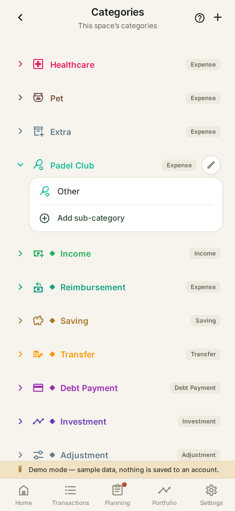
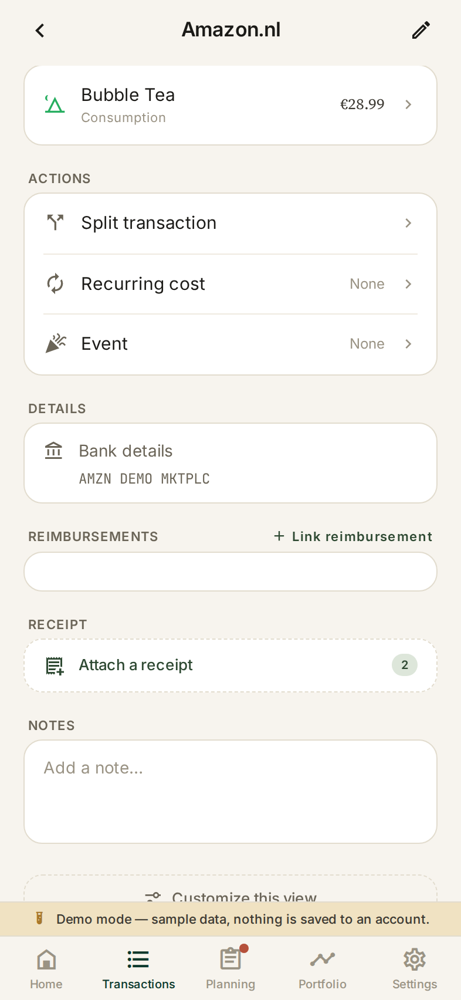
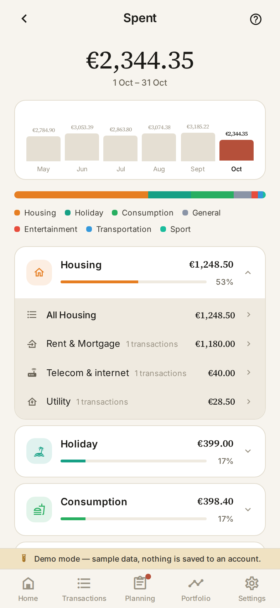
Events: what a trip, a party or a project really cost
An event groups transactions around one occasion and totals them live. Give it a picture — a bundled one, or your own, dragged in its frame to choose the part that shows on the card and the event page — a name, a date range, an optional estimation and a note. Inside it, everything that moved in the date range — money received included (a reimbursement, a contribution), never a movement between your own accounts — lines up for review, and one tap attaches your picks; single transactions link from their own detail screen (the event link is there for every transaction except a movement between your own accounts), and a split's parts join one by one. Money received for the event counts too: the headline is what the event cost you — or, when more came in than went out, the surplus with a plus — and a line under the dates says what was spent and what came in.
- The category list under the total drills down: tap a main category to see its subcategories and narrow the payments to it.
- Dated events show the average per day; an estimation adds a progress bar that turns red when the event costs more than planned.
- In a category drill of the family overviews a linked pair counts once: the "Show linked transactions" chip shows the counterpart beside the leg that counts, and opening the counterpart stays inside the overview.
Trends, forecast & export
Settings → Trends charts your spending per category over the months, income against expenses, and your net worth over time. Home's "Safe to spend" block tells you what is really free until payday — tap it for the full breakdown. And under Global settings → Export data your transactions leave as CSV or a JSON backup, straight from the device.
- Subscriptions show their yearly cost, and a sustained price change badges itself with the yearly damage.
- The year tabs draw the months as one smooth chart: paid runs up to the current period, the estimate runs from it into the future, and a vertical marker names the SPACE’S start date (nothing before it is tracked). Tap any dot for that month’s value and a "Show transactions" door listing the charges behind it — rows travel straight to the transaction (on desktop the detail opens BESIDE the chart, recurring stays put; back returns to the tab you were in), a future month’s door says "Show recurring costs" instead, and expected rows wear their recurring’s icon and jump to it.
- A recurring cost with a special category can carry a counterparty, and linked charges inherit it: a manual counter mints its leg per charge, a bank-fed one asks per charge or waits for the feed.
- Recurring costs live only in the tabs they actually occur in — this month, next month, this year, next year — so a yearly insurance due in January 2027 waits under next year; the All tab shows the whole stable, including many-year cadences. An occurrence older than the space\u2019s start date neither lists nor counts as unpaid: its payment is simply older than the space can see.
- The net-worth Home block is opt-in via Customize Home.
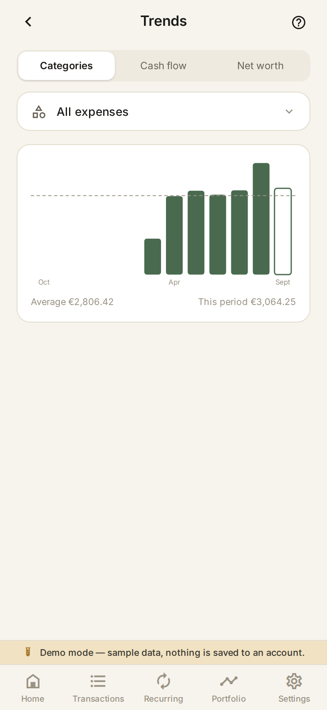
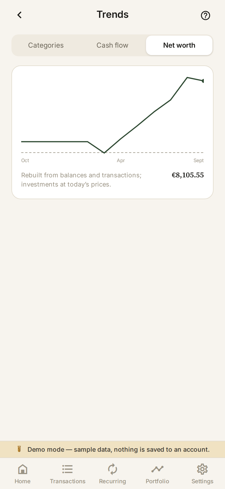
Devices & offline
Signed in, every device converges on the same data — edits made offline sync when you're back. Two people can edit the same transaction at once; the newer edit per field wins everywhere, identically. And if you ever want out of the cloud entirely, Profile → Go offline converts your account into a device-only offline profile: everything stays, bank-linked accounts become manual, your server data is erased, and other signed-in devices wipe themselves on their next sync.
- Push notifications tell you when new bank transactions arrive — tapping one opens that space\u2019s review directly.
- The row under the notifications switch sends a test notification — proof that push reaches this very device.
- The sync card at the top of Settings shows the last successful sync.
- Global settings → Devices lists every device signed in to your account — web devices name their browser and same-name twins number themselves (2), (3); rename them, and disconnect one remotely: it erases its munni data the next time it connects.
- If the server ever refuses your session, nothing is lost and nobody is signed out: munni keeps working on this device and the banner offers a sign-in — one tap, and when the browser still remembers you nothing needs retyping.
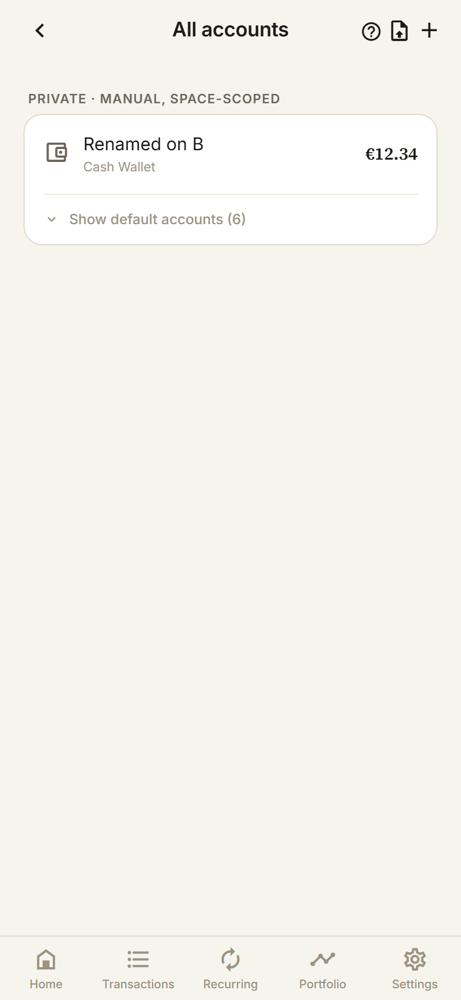
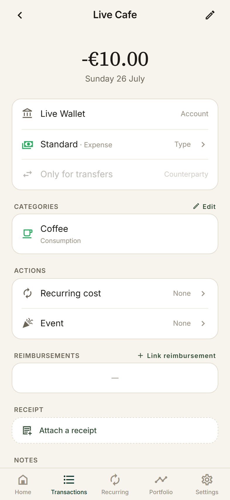
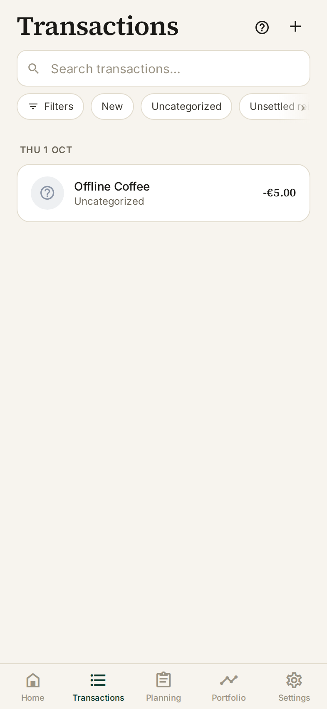
Connections
Settings → Connections is the one place for every party that holds your data: banks, shops and registries. Connect a party from the catalogue and sign in the way the party asks — a verification code, an approval in its app, a picture to read, or its own sign-in page streamed to you — then name the connection and pick the spaces its receipts may reach — or none for now: a connection is yours, not a space's, and the card's menu changes it later. A shop's receipts flow into the spaces you picked; a bank's or registry's accounts appear under its card, each with an Attach button that lands on the space's accounts screen with the account already picked — nothing joins a space by itself. Each card tells you where you stand: synced and when, sign in to sync on this device, reconnect needed, blocked by the party, a question waiting, or "syncs by itself" for a party that lives on your own computer. A first sync reaches as far back as the party allows, the card says which dates its fetches cover, and a running fetch counts up what it has found so far. Sync now pulls the newest receipts or transactions; a receipt never attaches by itself: a clear match is proposed — on the review card for a transaction still to review, under Matches to check and on Home for one you already reviewed.
- A bank account that no connection fetches any more says so — on the account itself and in this hub — with a Reconnect door; a new consent that reaches it lands on the same account, history included.
- A private agent hosted by munni: the parties that only talk to a browser on your own computer (DigiD, a bank that keeps a signed-in profile) can run on a browser munni keeps for you alone — ask for one under Your own computer, the admin hands you a slot, and giving it back wipes it for the next person.
- Your login stays yours: the party hands munni a sealed session key that only your own devices hold — munni\u2019s servers never see a password, and the app never stores one. In the browser the key lives in the tab; the app keeps it.
- A receipt that fits a transaction asks first — on the review card (yes, no, or another receipt), under Matches to check on the Receipts screen and on the transaction itself; Home points at the matches of transactions you already reviewed. Open the receipt or the transaction to compare before you answer; yes attaches it, no makes sure that transaction is never proposed again, and what you decide in review is decided everywhere.
- Fetched receipts bring their invoices along — open the PDF right from the receipt; MediaMarkt’s are asked for on the order’s own page, the way you would.
- Fetched receipts under Connections lists everything your shops handed over, per connection, without a space’s matched/unmatched labels — open a space’s Receipts to link one to a transaction. A receipt opens full screen: its items, its invoice, the transaction it proves.
- Use on my other devices ships your connections to your other devices as ciphertext; a new device waits until you approve it after comparing the 6-digit codes.
- A party that needs your own computer says so in the catalogue; a party without web support asks for the munni app.
- Your own computer: some parties only talk to a browser on your own connection (DigiD, a bank that keeps a signed-in profile). Enrol your computer once — a name, a one-time code, one line to paste in a terminal — and pick it when such a party connects; it signs in there and syncs by itself, and the card tells you when it has a question. Removing an agent destroys the sign-ins it keeps.
- When a party's run fails, munni may ask "Report this failure?" — yes sends the last picture of the page (secret fields hidden) to the people who run munni for a month, no deletes it; "Always report failures" in a connection's menu answers for you. A fetch you closed the app on is picked up where it left off.
Planning: money gets a job
The Planning tab hands the money on your checking and cash accounts out to the plan’s subjects before it gets spent — recurring costs and debts first, then your own expense subjects, budgets and goals. Start a period’s plan like the last one, from a blueprint, from munni’s suggestion (your recurring costs, loans, budgets and goals plus the categories you spend on, sized from your history or the income you type) or empty. Every subject shows what it holds against what it needs and what was spent: fill one, a segment or everything with a tap, cover a subject in the red from one with room (munni’s picks first), and snooze a recurring cost, debt or goal that is not due this period. The head reads green when every euro has a job; the circle counts the periods funded ahead — grey for none, green for one, orange for two, red when money sits idle — and tapping it funds the next period from what is left.
- An expense subject is yours: a name, a face, one or more categories (a main claims its subs, future ones too; untick a sub to leave it out) and a target — last period and the average are a chip away. A category another expense subject answers for can be taken over on the spot.
- What a recurring cost or debt holds and does not spend carries into the next period; a budget subject is a ceiling, not a wish, so it never counts against the circle.
- Blueprints keep a plan’s shape without its money — save this plan as one (an identical twin is refused, with an override), apply one to this period and the periods ahead, repair one whose sources disappeared. The sandbox is a copy of this period’s plan to try things in: make it the plan, reset it or discard it.
- The previous period still lets you move money; older periods are read-only. The money pool is every checking and cash account unless the space ticks its own set; the category picker shows what the plan still has per category; a subject in the red earns a dot on the tab, a row in the bell and a daily notification.
- The recurring manager moved from the tab bar to Home — its own Recurring block beside Coming up — and to Settings → Track.
- Spending on categories no subject answers for gathers in an Unplanned segment at the bottom, grouped by main category with its subs broken out and a Plan it door that opens the editor filled in; it starts empty every period. The pager walks into the periods ahead too, and Take all back asks first.
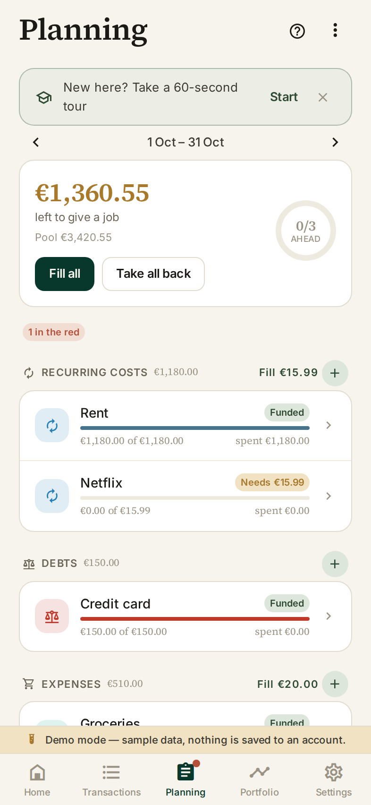
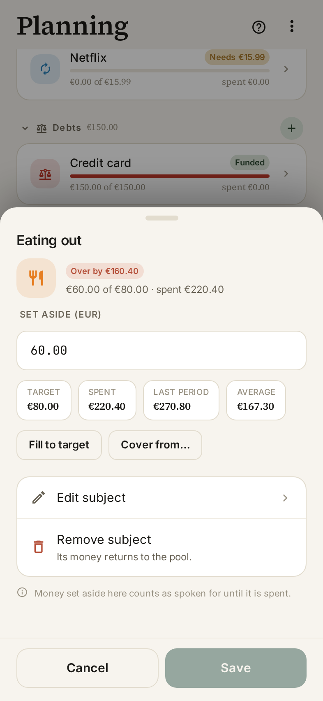
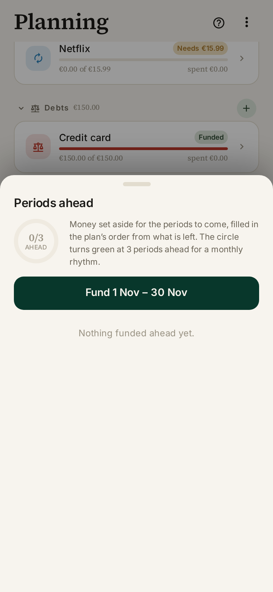
Debts and the payoff planner
A loan is an account: create it like any account (interest, original size, payment and its cadence live on it) and it appears under Debts with what is left, the payment per month and the month you are free. The payoff planner (Debts → Payoff planner) puts the loans in an order — Avalanche pays the highest interest first, Snowball the smallest balance first, Tsunami the debt that weighs on you most first — and shows what an extra amount per month buys: the debt-free month, the interest against paying the minimums only, a chart of both, a ladder of small extras you can apply with a tap, and the month each debt ends.
- The tsunami order reads a weight (light to heavy) you give each loan — in the planner or on the loan’s edit sheet.
- A payment that does not beat its own interest is flagged in the order: raise it, or the extra, and the plan comes back.
- Your extra and order are remembered per space on this device; nothing about the plan is stored on the loan but the weight.